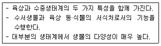
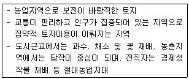
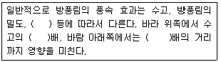
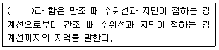

자연생태복원기사(구) (2016-05-08 기출문제)
1과목: 환경생태학개론
1. 산림의 생물량이 20000g/m2, 매년 성장증가량이 1000g일 때 대사회전율(A과) 대사회전시간(B)은?
- A : 0.2, B: 5년
- A : 0.⑤, B: 20년
- A : 5, B: 5년
- A : 0.5, B: 20년
(정답률: 68%)

2. 미생물 또는 화산활동 및 번개의 방전 등에 의해 생태계에 유입되는 물질을 생성하는 생물지화학적 순환(biogeochemical cycle)은?
- 산소순환
- 질소순환
- 인순환
- 황순환
(정답률: 81%)
3. 극지대나 고산지대의 나무가 없고 평평하거나 기복이 완만한 곳으로서 높은 산의 수목한계선(tree line) 바로 위에 존재하며, 가장 넓은 곳은 티벳고원과 그 주변이고, 북미에서는 서부산악 지대와 멕시코의 높은 산으로 이들 지역의 식생은?
- 열대우림
- 온대초원
- 고산툰드라
- 고산낙엽수림
(정답률: 75%)
4. 생물군집의 시간적 변천과정을 생태적 천이라고 하는데, 다음 중 육상식물의 천이과정을 바르게 표현한 것은?
- 나지→관목→다년생 초본류→광엽수림
- 나지→일년생 초본류→관목→광엽수림
- 일년생 초본류→광엽수림→관목→나지
- 관목→다년생 초본류→나지→광엽수림
(정답률: 87%)
5. 다음 중 극상(極相, climax)의 설명으로 가장 거리가 먼 것은?
- 대상지역의 기후 조건과 평형상태를 이룬 극상을 기후극상이라고 한다.
- 어느 특정장소에서 그 장소의 기후극상도 토양극상도 아닌 안정된 군집이 인간이나 가축에 의해서 유지되는 경우 극상이라고 하지 않는다.
- 기후극상이 발달할 수 없는 지형이나 토양에서 이루어진 극상을 토양극상이라고 한다.
- 우리나라 온대중부지역의 대표적인 기후극상은 서어나무림이다.
(정답률: 67%)
6. 기름 유출로 인해 발생되는 해안지역의 오염현상에 대한 설명으로 가장 거리가 먼것은?
- 뿌리가 얕은 1년생 해조류들은 체내 저장영양분이 거의 없기 때문에 기름 유출로 인해 광합성이 어려워진 상태에서 더욱 피해를 입기가 쉽다.
- 유화제와 같은 계면활성제는 모래입자 사이의 공극수의 표면장력을 증가시킴으로써 모래의 물리적인 현상을 변형시켜 해양오염을 제거하기 때문에 1990년대 이후 널리 이용되고 있다.
- 염습지에서는 잘게 부서진 기름덩어리의 작은 조각들이 가장 유독하지만, 큰 덩어리들과 원유들은 식생을 완전히 녹여 버릴 수가 있으며, 사멸된 지역에 다시 그 종이 자리 잡기 위해서는 장기간의 시간을 필요로 한다.
- 1년생 종들의 경우가 기름에 가장 민감하여 완전히 사망하게 되거나 생식기관이 심하게 타격을 받게 되며, 일부 저항성 및 내성이 있는 식물종이라도 기름에 의해서 계속되는 빛의 산란 때문에 결국은 사망할 가능성이 높다.
(정답률: 80%)
7. 최소량의 법칙(Liebig's law of minimum)에 관한 설명으로 가장 거리가 먼 것은?
- 식물에는 필요원소 또는 양분 각각에 대하여 그 생육에 필요한 최소한의 양이 있다.
- 만일 어떤 원소가 최소량 이하이면 다른 원소가 아무리 많아도 생육에 지장이 있다.
- 원소 또는 양분 중에서 가장 소량으로 존재하는 것이 식물의 생육을 지배한다.
- 원소 또는 양분 중에서 가장 다량으로 존재하는 것이 식물의 생육을 지배한다.
(정답률: 72%)
8. 산림성 조류의 길드에 대한 개념 구분으로 잘못 연결한 것은?
- 수동 영소 길드 - 나무 구멍을 둥지로 이용하는 종류
- 임연부 영소 길드 - 숲의 내부 공간을 둥지나 자원으로 이용하는 종류
- 수관층 영소 길드 - 수관층을 둥지로 이용하는 종류
- 관목층 영소 길드 - 지면, 관목, 덩굴수목 등에 둥지를 짓는 종류
(정답률: 56%)
9. 토양단면에 대한 설명으로 옳은 것은?
- 표층토는 A층으로서 부식의 양이 적어 황갈색을 나타내게 된다.
- B층은 낙엽이나 유기물이 축적되어 암흑색을 나타내게 된다.
- 표층토의 부식질은 물과 양분을 흡수 보유하는 능력이 많아 식물생육에 유익한 성분이다.
- 부식질은 흙속 미생물의 활동을 억제하여 토양이 부패하는 것을 억제하는 효과가 있다.
(정답률: 70%)
10. 생태계 내에 개체군의 포식(predation) 상호작용에서 피식자(prey)가 포식자(predator)로부터 피식되는 위험을 최소화하기 위한 장치로 볼 수 없는 것은?
- 의태(mimicry)
- 위장(camouflage)
- 방위(defense)
- 상리공생(mutualism)
(정답률: 85%)
11. 생태학적으로 중요한 방사성 동위원소가 아닌것은?
- Uranium-238
- Strontium-90
- Potassium-40
- Carbon-12
(정답률: 56%)
12. 생태계의 창발성 원리(emergent property principle)를 바르게 설명한 것은?
- 생명세포의 분열은 결국 환경조절인자에 의해 극대화될 수 있다
- 생태계 에너지 흐름은 무질서도의 증가에 따른 개별단위 개체의 생산성을 촉진한다.
- 효율적인 영양의 순환이 미생물생태계의 에너지 효율을 최대 100배 이상 증진시킨다.
- 하위단위가 조합하여 더 크고 기능적인 전체를 이룰 때 하위계층에 없었던 성질이 상위계층에서 새로 생긴다.
(정답률: 73%)
13. 자생적 독립영양 천이의 설명으로 틀린 것은?
- 총생물량이 증가한다.
- 개체의 크기는 작아지는 경향을 나타낸다.
- 비생물적 유기물질은 증가한다.
- 생물종의 구성은 처음에는 빠르게 변화하고, 시간이 흐르면서 차차 느리게 변화된다.
(정답률: 62%)
14. 개체군의 연령조성에 대한 설명으로 틀린것은?
- 꿀벌의 연령조성은 계절에 따라 변화한다.
- 곤충들은 일반적으로 생식연령이 생활사의 반을 차지한다.
- 연령조성은 팽창형, 안정형, 감소형으로 구분된다.
- 개체군의 연령은 전생식연령, 생식연령, 후생식연령으로 구분된다.
(정답률: 64%)
15. 다음 부식(腐植)의 기능 중 옳은 것은?
- 부식은 식물의 영양분을 저장하는 능력이 감소한다.
- 부식은 흡습계수가 크기 때문에 보수력이 증가한다.
- 병원미생물의 생활 장소로 알맞아 배양기 역할을 한다.
- 암흑색과 분해 시 발열 때문에 지온이 낮아지는 경향이 있다.
(정답률: 60%)
16. 다음이 설명하고 있는 생태계는?

- 유수생태계
- 정수생태계
- 습지생태계
- 하구역생태계
(정답률: 80%)
17. 식물체 또는 그 일부분에서 합성된 화학물질들이 외부로 배출되어 타식물에게 영향을 주는 작용을 타감작용(allelopathy)이라 한다. 다음 중 타감작용으로 인한 화학물질의 효과가 아닌 것은?
- 기피제
- 탈출제
- 페로몬
- 생육억제제
(정답률: 79%)
18. 하대기생태계에 대한 설명 중 대류를 층화(stratification)에 의해 나누었을 때, 기상현상과 대류현상이 일어나는 권역은?
- 대류권
- 성층권
- 중간층
- 전리층
(정답률: 78%)
19. 적조에 의한 어패류 폐사의 원인에 관한 설명으로 틀린 것은?
- 적조의 점성질에 의한 질식
- 플랑크톤에 포함된 독물질
- 무척추동물에 의한 피해
- 세균에 의한 피해
(정답률: 78%)
20. 다음 중 생물군집의 특성이 아닌 것은?
- 다양성
- 우점도
- 비중
- 밀도
(정답률: 76%)
2과목: 환경계획학
21. 다음은 토양 분류에 따른 토지능력에 대한 특징이다. 몇 급지에 해당하는 토지인가?

- 1급지
- 2급지
- 3급지
- 5급지
(정답률: 57%)
22. 도시생태공원계획 시 고려할 사항으로 가장 거리가 먼 것은?
- 세부적인 환경을 고려하여 야생동물을 위한 환경을 조성
- 식재 시 식물들의 지역성보다는 수종의 다양성을 고려
- 기존의 수림지나 초지, 수변공간 등과 인접한 장소 선정
- 구역의 보호, 육성을 위해 이용제한 등을 필요에 따라 마련
(정답률: 82%)
23. 수도권의 인구와 산업을 적정하게 배치하기 위하여 권역을 구분하고 지정하고자 한다. 다음중 수도권정비계획법상 지정 불가능한 권역은?
- 과밀억제권역
- 성장관리권역
- 유보관리권역
- 자연보전권역
(정답률: 44%)
24. 백두대간 보호에 관한 법률에 따라, 산림청장은 백두대간을 효율적으로 보호하기 위하여 '백두대간보호 기본계획'을 환경부장관과 협의하여 매 10년마다 수립하도록 하고 있는 바, 다음 중 기본계획에 포함되는 사항이 아닌것은?
- 백두대간의 보호에 관한 기본 방향
- 백두대간의 현황 및 여건 변화 전망에 관한사항
- 백두대간의 개발입지에 대한 장래 총량 설정사항
- 백두대간보호지역에 거주하는 주민에 대한 지원에 관한 사항
(정답률: 58%)
25. 다음 중 환경의 자유재(free goods)에 대한 설명으로 틀린 것은?
- 자유재는 분리되지 않음
- 시장에서 관리되지 않음
- 자유재는 관리 없이 무한정 쓸 수 있음
- 재화의 창출에 아무도 자발적으로 공헌할 준비가 되어 있지 않음
(정답률: 77%)
26. 오늘날 야기되는 대표적인 환경문제가 아닌것은?
- 이산화탄소의 감소
- 대기오염
- 지구온난화
- 자원고갈
(정답률: 80%)
27. 환경 친화적인 도로계획의 개념으로 가장 거리가 먼 것은?
- 노선선정 단계에서 사회ㆍ환경적 영향, 경제적 효과, 건설비용, 도로구조의 기술적 부분 등을 종합적으로 고려하여야 한다.
- 사업구상단계에서는 환경보전의 편익은 고려하지 않더라도 경제적 편익, 건설비용 교통소통 효과 등은 반드시 고려되어야 한다.
- 도로설계에 있어서 자연의 훼손을 최소화 하고, 훼손된 자연을 원래의 자연생태에 가깝게 복구함으로써 주위 환경과 조화되로록 한다.
- 환경친화적인 도로설계는 도로에 의해 자연환경과 생활환경이 파괴되지 않고, 지역전체로 볼 때 일체감을 갖도록 하는 것이다.
(정답률: 83%)
28. 다음 중 생태ㆍ자연도 작성방법이 옳은 것은?
- 격자는 grid법으로 정하며 한 격자는 250 × 250 m로 한다.
- 평가항목의 경계는 파선, 실선 및 1점 쇄선과 격자를 평행하여 표시한다.
- 평가항목 중 “식생, 습지, 지형”은 원칙적으로 파선으로 경계를 표시한다.
- 3만분의 1의 지형도에 작성함을 원칙으로 한다.
(정답률: 57%)
29. 1991년부터 환경분쟁조정위원회가 설치되어 환경오염으로 인한 국민의 건강과 재산상의 피해를 행정기관에 의해 신속, 공정한 분쟁조정으로 구제할 수 있는 제도가 시행되고 있는 바, 다음 중 우리나라에서 시행되는 분쟁조정 종류가 아닌 것은?
- 알선
- 화의
- 조정
- 재정
(정답률: 48%)
30. 광역토지이용계획에서 토지 이용 용도 중 보전 용지인 것은?
- 장래 도시 용지로 이용할 지역
- 한강수계상수원 수질개선 및 주민지원 등에 관한 법률상 수변지역
- 개발제한구역 중에서 조정가능지역에서 개발예정지역으로 지정된 지역
- 주거, 공업, 상업지역, 도시공원 용지로서 도시적 토지이용에 합당한 지역
(정답률: 63%)
31. 1948년 설립되어 전 세계의 정부 및 비정부기구가 참여하고 있으며, 멸종위기에 처한 동식물의 현황과 위협 수준을 담은 '적색목록서(Red Data Book)'를 발간하는 국제기구는?
- 유엔환경계획(UNEP)
- 세계자연보전연맹(IUCN)
- 세계야생생물기금(WWF)
- '멸종위기에 처한 야생동식물종의 국제거래에 관한 협약'(CITES) 사무국
(정답률: 46%)
32. 생태네트워크 공간구성원리의 지역구분에 해당하지 않는 것은?
- 핵심지역
- 완충지역
- 코리도
- 특수지역
(정답률: 73%)
33. 도시생태학적 접근방법 중 하나인 도시 내 토지이용 형태를 결정하는 이론으로 도시의 성장과정은 중심업무지구, 점이지대, 근로자 주택지대, 중산층 주택지대, 통근자 지대인 5대지대로 구성된다는 버제스(Ernest W. Burgess)의 이론은?
- 선상 이론
- 지대 이론
- 다핵실 이론
- 동심원 이론
(정답률: 57%)
34. 국가환경종합계획은 한반도의 자연환경과 생활환경을 온전하고, 건강하게 하여 지속가능한 사회를 실현하고자 하는 데 그 목표가 있다. 국가환경종합계획과 관련된 설명 중 틀린것은?
- 국가환경종합계획은 10년마다 수립하여야 한다.
- 국가환경종합계획에는“국토환경의 보전에 관한 사항”을 포함하여야 한다.
- 국가환경종합계획의 추진을 위해 환경보전중 기종합계획을 5년마다 수립하여야 한다.
- 국가환경종합계획을 변경하려면 그 초안을 마련하여 공청회 등을 열어 국민, 관계 전문가 등의 의견을 수렴한 후 국무회의의 심의를 거쳐 확정한다.
(정답률: 72%)
35. 다음 중 지구단위계획의 포함내용으로 틀린것은?
- 환경관리계획 또는 경관계획
- 토지의 용도별 수요 및 공급에 관한 사항
- 건축물의 배치ㆍ형태ㆍ색채 또는 건축선에 관한 계획
- 용도지역이나 용도지구를 대통령령으로 정하는 범위에서 세분하거나 변경하는 사항
(정답률: 35%)
36. 습지보전법상 습지보전기본계획에 포함되어야 할 사항이 아닌 것은?(단, 기타사항 등은 제외한다.)
- 습지조사에 관한 사항
- 습지보호지역 지정에 관한 계획
- 습지보전을 위한 국제협력에 관한 사항
- 습지의 분포 및 면적과 생물다양성의 현황에 관한 사항
(정답률: 50%)
37. 국토의 계획 및 이용에 관한 법류에서 국토는 토지의 이용실태 및 특징, 장래의 토지이용방향 등을 고려하여 용도지역으로 지정하는 데 다음중 그 구분에 해당하지 않는 것은?
- 관리지역
- 경관지역
- 도시지역
- 자연환경보전지역
(정답률: 59%)
38. 도시환경성 평가의 과정으로 맞는 것은 ?
- 토지적성 평가
- 사전환경성 평가
- 환경적합성 분석
- 생태적수용력 분석
(정답률: 40%)
39. 자연공원법 중 공원관리청은 관련 규정에 따라 허가를 받아 공원시설을 관리하는 자로부터 점용료 또는 사용료를 징수 할 수 있는데, 건축물 기타 공작물의 신축에 따른 기준요율(인근 토지 임대료 추정액 기준)은?
- 100분의 10이상
- 100분의 20이상
- 100분의 30이상
- 100분의 50이상
(정답률: 64%)
40. 지역환경 생태계획의 계획단위를 큰 것부터 작은 순서대로 나열한 것은?
- Landscape District → Ecoregion → Bioregion → Sub bioregion → Place unit
- Bioregion → Sub bioregion → Ecoregion →Place unit → Landscape District
- Place unit → Bioregion → Sub bioregion → Ecoregion → Landscape District
- Ecoregion → Bioregion → Sub bioregion → Landscape District → Place unit
(정답률: 61%)
3과목: 생태복원공학
41. 훼손지녹화용 수목의 선택기준으로 옳지 않은 것은?
- 종자의 확보가 용이하여야 한다.
- 건조에 견디는 힘이 강해야 한다.
- 번식력과 생장력이 왕성해야 한다.
- 세근보다 직근의 발달이 우세하여햐 한다.
(정답률: 77%)
42. 훼손지 비탈면 녹화용 식물선택의 기본적 요건 중에서 가장 거리가 먼 것은?
- 건조에 견디는 힘이 커야 한다.
- 번식력과 생장력이 왕성해야 한다.
- 다년생으로 동계의 보전효과가 높은 식물이어야 한다.
- 근계의 발달이 지나치게 좋으면 비탈면의 붕괴를 가져오므로 초본류의 식물로만 선택한다.
(정답률: 80%)
43. 잠재자연식생(potential natural vegetation)의 개념과 다른 설명은?
- 토지에 나타난 자연식생의 잠재적인 가능성
- 천이의 마지막 단계에 나타나는 극상군락과 일치함
- 현존식생에 가해진 인위성이 제거되었을 경우 성립되는 식생
- 부가역적 토지변화가 있는 곳은 원식생으로 변화가 안 됨
(정답률: 56%)
44. 토양에 유기물 함량을 높이는 방법으로 틀린것은?
- 모든 식물의 유체(遺體)는 토양으로 되돌려 주어야 한다.
- 유기물이 토양으로부터 유실되는 토양 침식을 막아야 한다.
- 되도록 땅을 자주 갈아 주어 미생물에 의한 토양 분해를 촉진 시켜 준다.
- 토양 중 유기물의 함량을 쉽게 증가시키려면 신선 퇴비보다는 완숙 퇴비가 효과적이다.
(정답률: 64%)
45. 토양의 산성화의 원인에 대한 설명으로 틀린것은?
- 산성토양은 황의 함량이 많기 때문에 산성 황화토양이라고도 한다.
- 강우량이 증발량보다 적은 곳에서는 수용성 염기물질(K, Na, Ca, Mg 등)이 용탈되어 토양이 산성화 된다.
- 질소 비료는 질산화 작용에 의해 NO3- 이온이 생성되는 과정에서 H+rk 증가되어 토양을 산성화 시킨다.
- 무기질 토양이 산성으로 될 때 점토 광물의 경우 표면에 흡착된 활성 수소이온이 해리되어 산성을 나타낸다.
(정답률: 57%)
46. 간척지의 관수 시 가장 부적합한 방법은?
- 간척지의 관수는 수목의 생리적 조건을 맞추기 위한 관수와 토양내 염분을 제거하기 위한 관수 2가지로 구분할 수 있다.
- 염해지에서 적정량 이상의 관수는 토양 속의 영양분을 용탈시키고, 지하수위를 상승시켜 식물에게 피해를 줄 수 있다.
- 간척지 토양의 투수성을 증진하기 위해 초기에는 명거에 의한 배수와 건조 그리고 관수에 의한 습윤 등의 반복으로 토양숙성을 촉진하는 것이 바람직하다.
- 겨울에는 여름에 비해 자연강우가 적어 모세관수 상승의 위험이 낮으므로 많은 양의 관수를 통해 염분이 용탈되도록 한다.
(정답률: 56%)
47. 환경문제 해결에 부응하는 콘크리트가 아닌것은?
- 한중 콘크리트
- 식생 콘크리트
- 조습성 콘크리트
- 자원순환 콘크리트
(정답률: 80%)
48. 도시지역에서의 복원공법 중 벽면녹화의 목적이 아닌 것은?
- 도시 내의 녹지율 증가
- 수분증발에 의한 건축물의 냉각효과
- 도시 내의 수직적인 공간을 생물서식처로 조성
- 수직적인 공간의 위와 아래에 조성된 생물 서식처를 단절
(정답률: 74%)
49. 도시지역에서 잠자리의 서식환경을 위하여 연못을 만들려고 한다. 관리할 때 유의사항으로 틀린 것은?
- 배수량의 조절은 한 번에 물을 빼는 것을 피하고, 1/3 정도로 나누어 교체한다.
- 연못 바닥의 모래뻘, 낙엽 및 낙지는 유충의 거처나 먹이의 발생원이기 때문에 가능한 한 남기도록 한다.
- 인공연못이나 간이 잠자리 유치 수조에서는 물 바꾸기의 횟수를 최대한 늘린다.
- 간이 잠자리 유치 수조 증에 물을 보급할 때에는 1/3~1/4 정도면 수돗물을 사용해도 지장은 없다.
(정답률: 76%)
50. 가로나 주차장 및 광장 등의 식수대 안에 식재할 때 사용되는 방법으로 현지 토양을 굴착하여 객토로 바꿔 넣는 공법은?
- 경운공
- 객토치환공
- 객토성토공
- 경운객토성토공
(정답률: 80%)
51. 분사식 씨뿌리기 공법 중에서 건식 종자뿜어 붙이기의 특징으로 가장 거리가 먼 것은?
- 혼합한 물량이 적으므로 뿜기작업할 때에 뿜기재료의 유실이 적다.
- 습식 종자뿜어붙이기에 비하여 도달거리가 길어 시공성이 좋다.
- 시멘트 등 강력한 침식방지제를 사용하면 두껍게 뿜어 붙일 수 있다.
- 뿜기기계의 밀도가 비교적 높지 않으므로 보수성이 높다.
(정답률: 55%)
52. 생물다양성(biodiversity)에 대한 설명으로 가장 거리가 먼 것은?
- 지구상에는 여러 가지 생물종이 생육ㆍ서식하고 있고, 그 형태나 생활방식의 다양함을 종 다양성이라 한다.
- 생물다양성은 다양하다는 것에 가치를 둔 환경관을 형성하고, 생물다양성조약이나 생물다양성국가전략 등의 정책에도 이용되고 있다.
- 자연식생의 일부를 인위적으로 변경하여 천이의 초기 식물군락으로 바꾸는 것은 그 장소의 생태계 다양성이 높아졌다고 하더라도 오랜 역사의 결과로 형성된 고유성이 높은 식물군락을 고유성이 낮은 식물군락으로 바꾸는 것이기 때문에 지구 전체의 생물다양성을 상승시킨다.
- 생물다양성은 생물생활의 생태학적인 계층성에 대응하여, 종내 유전자의 다양성, 생태계에서의 종다양성, 경관에 있어서의 생태계의 다양성, 국토에 있어서의 경관의 다양성이라는 계층성을 가지고 있다.
(정답률: 81%)
53. 내염성이 약한 수종으로만 알맞게 짝지어진 것은?
- 삼나무, 왜금송
- 주목, 편백
- 녹나무, 꽝꽝나무
- 돈나무, 금목서
(정답률: 40%)
54. 환경포텐셜에 대한 설명으로 가장 거리가 먼것은?
- 환경포텐셜은 특정 장소에 있어서, 종의 서식이나 생태계성립의 잠재적 가능성을 나타내는 개념이다.
- 천이(succession)의 포텐셜은 입지포텐셜, 종의 공급포텐셜, 종의 관계포텐셜의 3가지 포텐셜에 의해 결정된다.
- 종의 공급포텐셜은 특정 장소에 대한 종의 공급가능성으로 종의 공급원과 공급처의 공간적 관계, 종의 이동력이라는 2가지에 의해 결정된다.
- 종의 관계포텐셜은 생태계의 시간적 변화가 어떤 과정을 거쳐 어느 정도의 속도로 진행되며, 최종적으로 어떤 모습이 될 것인가 하는 가능성이다.
(정답률: 66%)
55. 사방댐의 시공목적으로 가장 부적합한 것은?
- 홍수 시에 토사석력의 이동이 현저한 황폐한 계곡의 종ㆍ횡침식을 방지한다.
- 사방댐과 유사한 댐시설 관련 용어로서 치산댐, 토사조절댐, 저사댐, 방제댐 등이 있다.
- 황폐한 계곡에 상수가 흐르는 지대에서는 어도시설 등 자연생태계 복원보다는 음용수 시설 쪽으로 우선 시 되어야 한다.
- 주민들의 휴식공간으로도 활용할 수 있도록 조경공사도 겸용하고, 야생동물들의 음용수 및 서식처로서 활용할 수 있도록 확대 시공할 필요가 있다.
(정답률: 70%)
56. 간척지의 토지이용 방안에 대한 설명으로 가장 거리가 먼 것은?
- 신간척지 개량을 위해서는 토양의 배수와 토양의 구조 개선을 가장 우선시 해야 한다.
- 배수체계의 설계 시 주배수로의 깊이는 3m 이상, 간선 배수로는 2m 깊이 정고가 바람직하다.
- 신간척지는 초기제염을 위해 명거(open ditch)를 먼저 시공하여 2~3년 자연배수가 이루어진 다음 암거시공을 하는 것이 좋다.
- 간척지의 토양의 개량은 오랜 시간이 걸리므로 5~10년간 토양개량 및 토지이용 계획을 수립 후 단계적으로 실시한다.
(정답률: 52%)
57. 침수성 식물로만 맞게 짝지어진 것은?
- 검정말, 물수세미, 거머리말, 말
- 가래, 마름, 순채, 수련, 개연꽃
- 갈대, 줄, 부들, 애기부들, 창포
- 오리나무, 버드나무류, 들메나무, 낙우송
(정답률: 73%)
58. 토양 수분의 분류 설명으로 틀린 것은?
- 모세관수는 토양공극 즉 모세관에 채워지는 물이다.
- 토양입자와 결합 강도의 크기에 따라 결합수, 흡습수, 모세관수, 중력수로 구분된다.
- 결합수는 토양 수분의 한 성분으로서 식물에게 흡수되어 토양 화합물의 성질에 영향을 주지 않는다.
- 중력수는 중력에 의해 아래로 흘러내리는 물로서 토양 입자 사이를 자유롭게 이동하는 물이다.
(정답률: 75%)
59. 비료성분 중 칼륨(K)의 특징에 해당하는 것은?
- 식물의 세포핵의 구성요소로 되어 있고, 이것이 부족하면 뿌리의 발육이 나빠지며 지상부의 생장도 나빠지게 된다.
- 식물섬유의 주성분으로 줄기와 잎의 생육에 큰 효과가 있으며, 이것의 양이 부족할 경우 자엽의 생육이 빈양해지고, 잎의 색깔이 담황색을 나타내게 된다.
- 탄수화물의 합성과 동화생산물의 이동에 관여하여 동화작용을 촉진하고, 줄기와 잎을 강하게 하며, 병충해에 대한 저항성을 크게 한다.
- 식물의 직접적인 영양소로서 중요할 뿐만 아니라 산성의 중화, 토양구조의 개선, 토양유기물의 분해와 비효의 증진 등과 같은 간접적인 효과도 크다.
(정답률: 46%)
60. 방풍림의 조성에 관한 설명이다. ( )에 들어갈 용어와 숫자를 순서대로 나열한 것은?

- 풍향, 3, 10
- 풍속, 5, 15
- 풍속, 8, 28
- 풍향, 4, 40
(정답률: 52%)
4과목: 경관생태학
61. 경관생태학의 특성이 아닌 것은?
- 식물생리에 적합한 환경 연구
- 공간적인 이질서의 발달과 역동성
- 이질적인 경관 사이의 상호작용과 교환
- 생물적ㆍ비생물적 과정에 대한 공간 이질성의 영향
(정답률: 63%)
62. 토지이용과 경관생태학에 대한 설명으로 틀린것은?
- 파편과가 생물종에 미치는 영향은 공간이 변형된 결과이다.
- 인공위성 자료를 이용하여 삼림조각의 변화에 대한 경년변화를 알 수 있다.
- 토지이용의 변화와 파편화는 조각의 크기와 조각들 사이의 연관성을 증대시킨다.
- 경관변화의 유형과 생태적인 과정의 관계를 밝히는 것이 경관생태학의 중요한 이슈이다.
(정답률: 55%)
63. 도시생태계의 특성에 대한 설명으로 가장 거리가 먼 것은?
- 유전자 정보의 고립화로 인해 생물다양성이 저하된 상태이다.
- 자연생태계가 가지고 있던 자기조절능력이 상실된 경우가 허다하다.
- 도시생태계는 배후에 도시를 지원할 독립영양 생태계가 존재할 경우에만 유지될 수 있다.
- 생물군집과 물리환경 사이에 독립적인 물질순 환과 에너지 흐름으로 균형적 관계가 유지된다.
(정답률: 65%)
64. 인공경관생태의 유형 또는 종류로 볼 수 없는 것은?
- 경작지역
- 도시화지역
- 조리지역
- 습지 및 산림지역
(정답률: 73%)
65. 도시경관생태를 보전하기 위한 친환경적 계획기법이 아닌 것은?
- 비오톱 지도화
- 경관생태계획
- 인공지반 녹화
- 하천정비와 복구
(정답률: 60%)
66. 도로의 비탈면 녹화를 위한 중요 검토사항으로 볼 수 없는 것은?
- 교통량
- 사면 형성
- 식생공법
- 사면 식재지 구조
(정답률: 74%)
67. 다음 중 갯벌에 대한 설명으로 옳은 것은?
- 모래 갯벌, 펄 갯벌, 사변으로 구분한다.
- 펄갯벌에서는 갯지렁이류가 우점한다.
- 모래갯벌은 해수의 흐름이 느린 곳에 형성된다.
- 펄갯벌은 펄 함량이 50% 이상인 갯벌을 말한다.
(정답률: 49%)
68. SLOSS(Single Large Or Several Small) 논쟁에 대한 설명으로 틀린 것은?
- 도시생물지리학을 육상에 작용하는 과정에서 파편화된 서식처의 면적에 대한 논쟁이다.
- 종수와 경관조각의 크기는 어떠한 관련성을 가질 것인가에 대한 논쟁이다.
- 큰 경관조각 주변 바탕에 작은 경관조각이 산제하여 징검다리 서식처의 역할을 하는 것이 이상적이다.
- 여러 개의 작은 정관패치는 대형동물의 유지에 유리하다.
(정답률: 83%)
69. 생태적인 도시계획 및 개발을 위한 지침에 관한 설명으로 가장 거리가 먼 것은?
- 오픈스페이스를 연결한다.
- 서식지의 다양성을 유지한다.
- 자연과 경관에 대한 침해를 최소화한다.
- 사람 중심의 식물상과 동물상을 고려한다.
(정답률: 75%)
70. 옥상생태계의 조성효과로 가장 관계가 먼것은?
- 녹음효과
- 건강증진
- 환경교육의 장
- 동식물의 서식지 제공
(정답률: 59%)
71. 현재 사용 중인 주요 원격탐사 위성자료 중 정지궤도에 있으며, 해상력이 가장 낮은 것은?
- SPOT HRV
- IKONOS
- QuickBird
- NOAA GOES
(정답률: 47%)
72. 종-면적 곡선의 설명으로 가장 거리가 먼것은?
- 종수의 증가는 면적의 크기와 양의 상관관계를 갖는다.
- 종수의 증가는 일정면적이 되면 더 이상 급격한 증가는 없다.
- 종-면적 곡선은 지역별, 서식지별 차이가 존재하므로 각 지역에 맞는 상수를 사용한다.
- 종-면적 곡선은 J자 성장곡선과 유사하다.
(정답률: 58%)
73. 서식지의 파편화가 개체군에 미치는 영향에 대한 설명으로 가장 거리가 먼 것은?
- 파편화 초기에는 개체군에 영향을 주지 않는다.
- 파편화는 파편화된 서식처간에 종의 이동하는 것을 막는다.
- 파편화가 일어나면 개체군 밀도가 증가하여 혼잡효과가 나타난다.
- 파편화 후 시간이 지나면 장기적으로 국지적인 멸종이 일어날 수 있다.
(정답률: 60%)
74. 다음은 토지이용에 따른 경관특성변화 요소이다. 이 중 관련성이 가장 적은 것은?
- 조각의 크기
- 인공구조물
- 둘레길이
- 연결성
(정답률: 53%)
75. 경관생태학에서 경관 요소간의 생물이나 물질, 에너지의 이동 등 이들간의 관련성을 의미하는 것은?
- 경관의 기능
- 경관의 구조
- 경관의 변화
- 경관의 안정
(정답률: 35%)
76. 항공사진판독의 기술적 수단을 중요시하면서 최초의 경관생태학이라는 용어를 만든 사람은?
- 홈볼트(Humbolt)
- 트롤(Troll)
- 텐슬러(Tansley)
- 존벨트(Zonneveld)
(정답률: 74%)
77. 복원생태학과 경관생태학의 차이를 가장 잘 표현하는 개념은?
- 생물다양성의 증진여부
- 서식지의 복원 및 확충
- 생태복원 대상의 규모
- 인간의 간섭과의 연관정도
(정답률: 53%)
78. 도서생물지리학에 대한 설명으로 틀린 것은?
- 멸종률은 섬의 위치에 의해 결정된다.
- 이입률은 섬과 대륙과의 거리에 반비례한다.
- 도서의 종수는 이입률과 멸종률에 의해 결정된다.
- 도서생물지리학은 MacArthur와 Wilson이 주장했다.
(정답률: 40%)
79. 다음 비오톱 조성계획 요소에 대한 설명으로 가장 적합한 것은?
- 비오톱 내 전형적인 종의 유전자 흐름을 일시적으로라도 문제가 없어지도록 하려면 비오톱의 수가 적을수록 유리하여 공간적으로 충분한 거리를 유지하는 것이 좋다.
- 비오톱의 최소면적은 단위면적당 서식지와 구조의 다양성에 크게 좌우되기 때문에 면적은 가장 큰 공간의 면적으로 설정한다.
- 지표성의 원칙이란 각 비오톱 타입에서 면적에 관한 요구가 가장 높은 종 개체군의 휴지에 필요한 면적을 구하여, 이 값을 그 비오톱타입이 최소 필요 면적의 기준치로 정하는 것이다.
- 비오톱의 연결성을 확보하기 위해 징검돌(stepping stone) 비오톱이 매우 유용하므로 물리적으로 선형 또는 대형의 연결을 꾀하기보다는 징검돌형 비오톱을 확보하는 것이 바람직하다.
(정답률: 38%)
80. 식물군락조사에서 원격탐사를 이용한 분석이 가능하지 않는 것은?
- 식물군락의 현존량 추정
- 식물 활력상의 추정
- 식물군락과 탄소순환
- 식물군락의 수고
(정답률: 43%)
5과목: 자연환경관계법규
81. 독도 등 도서지역의 생태계 보전에 관한 특별법상 특정도서보전 기본계획의 수립주기는?
- 1년마다
- 3년마다
- 5년마다
- 10년마다
(정답률: 61%)
82. 산지관리법상 공익용산지에 해당하지 않는 것은?
- 사찰림의 산지
- 산림자원의 조성 및 관리에 관한 법률에 따른 시험림의 산지
- 자연공원법에 따른 공원구역의 산지
- 문화재보호법에 따른 문화재보호구역의 산지
(정답률: 67%)
83. 국토의 계획 및 이용에 관한 법률상 도시ㆍ군관리계획에 관한 설명으로 옳지 않은 것은?
- 도시ㆍ군관리계획을 입안하는 경우 입안을 위한 기초조사의 내용에 도시ㆍ군관리계획이 환경에 미치는 영향 등에 대한 환경성검토를 포함하여야 한다.
- 도시ㆍ군관리계획의 수립기준, 도시ㆍ군관리계획 도서 및 계획설명서의 작성기준ㆍ작성방법 등은 대통령령으로 정하는 바에 따라 국토교통부장관이 정한다.
- 도시ㆍ군관리계획 결정의 효력은 지형도면을 고시한 날부터 10일 후에 그 효력이 발생한다.
- 특별시장ㆍ광역시장 등은 5년마다 관할구역의 도시ㆍ군관리계획에 대하여 타당성 여부를 재검토하여 정비하여야 한다.
(정답률: 71%)
84. 환경정책기본법령상 수질 및 수생태계 하천에 대한 사람의 건강보호 기준으로 옳은 것은?
- 6가 크롬(Cr6+) : 0.1㎎/L 이하
- 테트라클로로에틸렌(PCE) : 0.⑤㎎/L 이하
- 벤젠 : 0.01㎎/L 이하
- 1,2-디클로로에탄 : 0.⑤㎎/L 이하
(정답률: 55%)
85. 독도 등 도서지역의 생태계 보전에 관한 특별법 시행규칙상 특정도서에서의 행위허가 신청서 작성 시 첨부서류 목록으로 가장 거리가 먼것은?
- 행위 대상지역의 범위 및 면적을 표시한 축적 2만 5천분의 1 이상의 도면
- 당해 지역의 주민 의견을 수렴한 동의서
- 당해 지경의 토지 또는 해역이용계획 등을 기재한 서류
- 당해 행위로 인하여 자연환경에 미치는 영향예측 및 방지대책을 기재한 서류
(정답률: 63%)
86. 산지관리법상 폐기물이 포함된 토석 또는 폐기물로 산지를 복구한 자에 대한 벌칙기준은?
- 1천만원 이하의 과태료
- 3년이하의 징역 또는 1천만원 이하의 벌금
- 5년이하의 징역 또는 3천만원 이하의 벌금
- 7년이하의 징역 또는 5천만원 이하의 벌금
(정답률: 61%)
87. 자연공원법상 금액별 과태료 부과기준 중 10만원 이하의 부과기준에 해당하는 것은?
- 야생동물의 포획허가를 받지 아니하고 총 또는 석궁을 휴대하거나 그물을 설치하는 행위
- 지정된 장소 밖에서의 상행위를 한 경우
- 공원구역에서 금지된 영업행위를 한 경우
- 지정된 장소 밖에서의 주차를 한 경우
(정답률: 77%)
88. 습지보전법상 용어의 정의이다. ( )에 알맞은 것은?

- 경계습지
- 연안습지
- 조식습지
- 하천습지
(정답률: 80%)
89. 산지관리법규상 산사태위험판정기준표 중 조사자의 점수보정 인자로 틀린 것은?
- 조사자 또는 마을사람들이 산사태발생 위험성이 전혀 없다고 생각함 : -10
- 조사자 또는 마을사람들이 산사태발생 위험지역이라고 생각함 : +20
- 과수원 및 초지단지, 유실수조림지 등 지피식생이 불완전한 산지 :+20
- 인위적 산림훼손지로 방치하거나 불완전한 방제 시설지 : +20
(정답률: 50%)
90. 자연환경보전법 시행규칙상 생태통로의 설치대상지역이 아닌 것은?
- 비무장지대
- 자연공원법에 따른 자연공원
- 생태ㆍ경관보전지역 중 전이보전구역
- 백두대간보호에 관한 법률에 따른 백두대간 보호지역
(정답률: 44%)
91. 환경부장관은 수렵동물 지정 등을 위하여 야생동물의 종류 및 서식밀도 등에 대한 조사를 최소한 몇 년마다 실시하는가?
- 1년
- 2년
- 3년
- 4년
(정답률: 65%)
92. 국토의 계획 및 이용에 관한 법률 시행령상 도시ㆍ군관리계획결정으로 용도지구를 세분할 수 있다. 그 중 경관지구에 해당하지 않는 것은?
- 자연경관지구
- 일반경관지구
- 수변경관지구
- 시가지경관지구
(정답률: 60%)
93. 야생생물 보호 및 관리에 관한 법률 시행규칙상 멸종위기 야생생물 1급에 해당하는 것은?
- 수달
- 담비
- 하늘다람쥐
- 큰바다사자
(정답률: 63%)
94. 습지보전법상 용어의 뜻 또는 습지보전을 위한 국가의 책무에 관한 사항으로 가장 적합한 것은?
- 습지라 함은 담수, 기수 또는 염수가 영구적 또는 일시적으로 그 표면을 덮고 있는 지역으로서 내륙습지 및 연안습지를 말한다.
- 연안습지라 함은 육지 또는 섬에 있는 호수 또는 못 등의 지역을 말한다.
- 특별시장은 내륙습지에 대하여 습지보호지역, 습지주변관리지역 또는 습지개선지역의 지정 및 보전에 관한 시책을 수립ㆍ시행한다.
- 국토교통부장관은 연안습지에 대하여 습지개선 지역 지정 및 보전에 관한 시책을 수립ㆍ시행한다.
(정답률: 64%)
95. 자연공원법령상 국립공원위원회의 위원장은 누구인가?
- 환경부차관
- 환경부장관
- 환경부 자연보전국장
- 국립공원관리공단 이사장
(정답률: 63%)
96. 환경정책기본법령상 다음 오염물질 중 대기환경기준이 화학 발광법에 의한 24시간 평균치로써 0.06ppm 이하인 것은?
- 오존(O3)
- 이산화질소(NO2)
- 아황산가스(SO2)
- 일산화탄소(CO)
(정답률: 59%)
97. 농지법규상 객토ㆍ성토ㆍ절토의 기준 등으로 옳지 않은 것은?
- 객토ㆍ성토ㆍ절토의 공통사항으로 농작물을 경작하거나 다년생식물을 재배하는데 필요한 범위 이내 일 것
- 성토는 농작물의 경작 등에 부적합한 토석 또는 재활용골재 등을 사용하여 성토하지 아니할 것
- 성토는 현행 토지 보다 낳거나 해당 농지의 관개에 이용하는 용수로 보다 낮게 성토하지 아니할 것
- 객토는 해당 농지에 경작 중인 농작물 또는 재배 중인 다년생식물을 수확한 후에 시행할 것
(정답률: 57%)
98. 백두대간보호지역 중 백두대간의 능선을 중심으로 특별히 보호하려는 지역은?
- 완충구역
- 중권역
- 핵심구역
- 대권역
(정답률: 78%)
99. 환경정책기본법령상 해역의 생태기반 해수수질 기준 중 III(보통) 등급의 수질평가 지수값은?
- 73 ~ 80
- 60 ~ 72
- 47 ~ 59
- 34 ~ 46
(정답률: 58%)
100. 환경정책기본법령상 수질 및 수생태계 상태별 생물학적 특성 중 생물등급에 따른 생물 지표종(저서생물)이 다른 하나는?
- 옆새우
- 가재
- 꽃등에
- 민하루살이
(정답률: 63%)